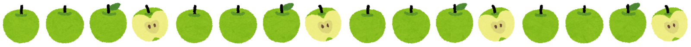

🎤
🎸
🎹
🎹
🎤
🎸
Mrs. GREEN APPLE

魅力
Mrs. GREEN APPLE は、ポップ・ロックをベースにしながらも、
クラシックやジャズのエッセンスを取り入れた独自のサウンドが魅力です。
ボーカル・大森元貴の伸びやかで表現力豊かな歌声と、
メロディーの美しさ、そして聴く人の心に刺さる歌詞が高く評価されています。
ライブパフォーマンスのエネルギッシュな熱量も大きな魅力のひとつです。
結成の経緯
2013年に東京で結成。高校の同級生を中心に集まったメンバーで活動を開始し、
2015年にメジャーデビューを果たしました。
2020年に一度活動休止を経たのち、2021年に大森元貴・若井滉斗・藤澤涼架の
3人体制で再始動。再始動後もヒット曲を連発し、国民的バンドへと成長しました。
メンバー
- 大森元貴（ボーカル・ギター） 愛称：もっくん
- 若井滉斗（ギター） 愛称：ひろぱ
- 藤澤涼架（キーボード） 愛称：涼ちゃん
主な曲の一覧
YouTube 視聴回数ランキング（上位10曲）
※ 2024年時点のおおよその視聴回数
| 順位 |
曲名 |
リンク |
リリース年 |
視聴回数（目安） |
| 1位 |
ダンスホール |
YouTube |
2022年 |
約3億回以上 |
| 2位 |
Magic |
YouTube |
2023年 |
約2億回以上 |
| 3位 |
Soranji |
YouTube |
2022年 |
約1.5億回以上 |
| 4位 |
僕のこと |
YouTube |
2018年 |
約1.2億回以上 |
| 5位 |
青と夏 |
YouTube |
2018年 |
約1億回以上 |
| 6位 |
WanteD! WanteD! |
YouTube |
2017年 |
約8000万回以上 |
| 7位 |
点描の唄 |
YouTube |
2018年 |
約7000万回以上 |
| 8位 |
StaRt |
YouTube |
2015年 |
約5000万回以上 |
| 9位 |
Attitude |
YouTube |
2019年 |
約4000万回以上 |
| 10位 |
コロンブス |
YouTube |
2024年 |
約3000万回以上 |
過去のライブ・実績
- 2015年 — メジャーデビュー、初のワンマンライブ開催
- 2016年 — 初の日本武道館公演を実現
- 2017年 — 「WOMAN FESTIVAL 2017」など大型フェスに出演
- 2018年 — 「Mrs. GREEN APPLE HALL TOUR 2018 "ENSEMBLE"」全国ツアー開催
- 2019年 — さいたまスーパーアリーナ公演、約2万人を動員
- 2019年 — NHK紅白歌合戦に初出場
- 2020年 — 活動休止を発表
- 2021年 — 3人体制で活動再始動
- 2022年 — 「TOUR 2022 "The White Lounge"」開催、各地即日完売
- 2023年 — 映画「THE FIRST SLAM DUNK」主題歌「Numero」を担当
- 2023年 — 「Mrs. GREEN APPLE 2023 STADIUM LIVE "Atlantis"」にて初スタジアム公演、約5万人動員
- 2024年 — NHK紅白歌合戦に出場、「コロンブス」で話題に
- 2023年 — 日本レコード大賞を「ケセラセラ」で受賞
- 2024年 — 日本レコード大賞を「ライラック」で受賞（2連覇）
- 2025年 — 日本レコード大賞を「ダーリン」で受賞、バンド史上初の3連覇を達成（史上3組目）
- 2024年7月 — 「ゼンジン未到とヴェルトラウム～銘銘編～」にてノエビアスタジアム神戸・横浜スタジアム公演、4日間で約15万人を動員
- 2024年10月〜11月 — 「Mrs. GREEN APPLE on "Harmony"」全国ツアー開催（全10公演）
- 2025年 — 初の5大ドームツアー「DOME TOUR 2025 "BABEL no TOH"」開催、愛知・札幌・福岡・大阪・東京の全12公演で約55万人を動員
ミセス初心者におすすめ！最初に聴くべき曲ガイド
まずはこの3曲から！
| 曲名 |
こんな人におすすめ |
ここが良い！ |
| ダンスホール |
とにかく明るくノリの良い曲が好きな人 |
イントロから引き込まれるポップなサウンド。一度聴いたら頭から離れないメロディー |
| 僕のこと |
しっとりした感動的な曲が好きな人 |
大森元貴の歌声の美しさが際立つバラード。歌詞の切なさが胸に刺さる |
| 青と夏 |
青春・爽やかな曲が好きな人 |
夏の映画「青夏 きみに恋した43日」主題歌。聴くだけで夏の情景が浮かぶ爽快感 |
次に聴いてほしいおすすめ曲
| 曲名 |
特徴・良いところ |
| WanteD! WanteD! |
テンポ感とユニークな歌詞が癖になる。ミセスらしさが詰まった代表曲 |
| 点描の唄 |
ゲストボーカルとの掛け合いが美しいデュエット曲。涙腺崩壊注意 |
| Soranji |
壮大なサビが圧巻。ライブで特に盛り上がる一曲 |
| Magic |
映画「THE FIRST SLAM DUNK」関連曲。疾走感とドラマチックな展開が熱い |
| StaRt |
デビュー曲。ミセスの原点を知るなら外せない爽やかなロックチューン |
ミセスの良いところまとめ
- 圧倒的な歌声 — 大森元貴のボーカルは高音の伸びが抜群で、感情表現が豊か
- 多彩なジャンル — ポップ・ロック・バラード・ダンスミュージックまで幅広い
- 刺さる歌詞 — 日常の感情や青春の切なさをリアルに表現した歌詞が共感を呼ぶ
- 聴きやすいメロディー — 初めて聴いても口ずさめるキャッチーな曲が多い
- ライブが最高 — バンドの一体感と演奏力の高さで、ライブ体験は格別
ミセスクイズに挑戦！
公式リンク